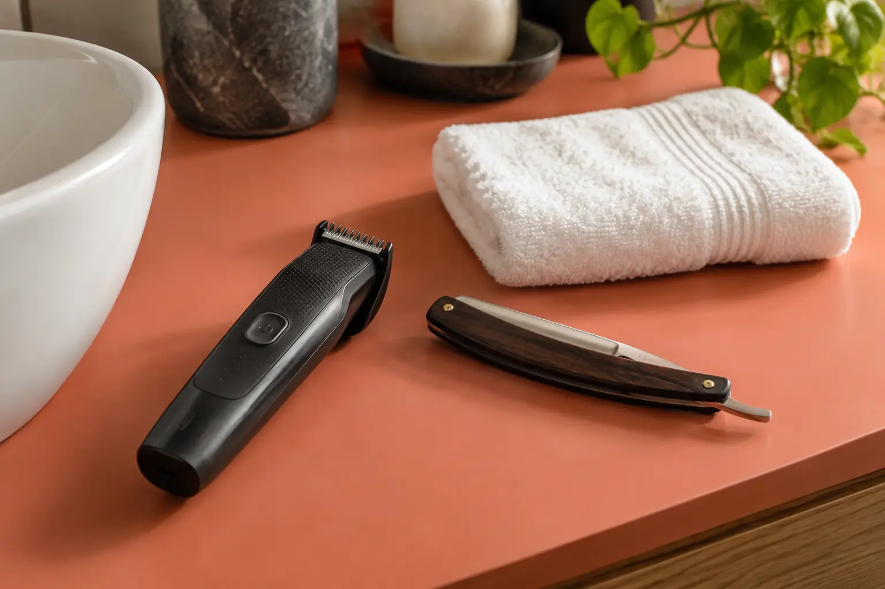

Barzdos formavimas mašinėle ar švarus skutimas: skirtingas rezultatas
Autorius: Madbeauty redakcija · Numatyta 2026 m. gruodžio 20 d. 10:00 (Lietuvos laiku)
Mašinėlė trumpina barzdą ir palieka ilgį, o švariu skutimu siekiama pašalinti matomus plaukus. Sužinokite, kaip pasirinkti darbų apimtį.

Mašinėle formuojant barzdą plaukai sutrumpinami ir paliekami ant veido; švaraus skutimo tikslas – pašalinti matomus plaukus pasirinktoje srityje. Jei norite išlaikyti barzdą, rinkitės trumpinimą ar modeliavimą. Jei norite atidengti odą, aiškiai prašykite švaraus skutimo. Kontūro tvarkymas gali būti atskiras darbas, todėl vien paslaugos pavadinimas ne visada pasako, kas įskaičiuota.
Ką palieka mašinėlė, o ką reiškia švarus skutimas?
Mašinėlė su ilgio antgaliu sutrumpina barzdą, tačiau jos nepašalina nuo veido. Toks pasirinkimas tinka, kai norite išlaikyti plaukų augimą, bet sutrumpinti ilgį arba sutvarkyti formą. Jei jums svarbu konkretus ilgis, parodykite jį nuotraukoje arba susitarkite, kaip jį apibūdinsite prieš pradedant darbą.
Švarus skutimas reiškia, kad pasirinktoje vietoje neturi likti matomų barzdos plaukų. Tai nėra tas pats, kas trumpai patrumpinti mašinėle. Jei norite barzdą palikti vienose vietose, o kitose nuskusti, įvardykite abi zonas atskirai.
Kontūro tvarkymas – atskiras klausimas
Skruostų ar kaklo kontūrą galima tvarkyti kartu su barzdos trumpinimu, bet nevertėtų to numanyti iš bendro pavadinimo. Prieš vizitą išsiaiškinkite, ar kontūras bus tik patikslintas, ar plaukai už jo ribų bus švariai nuskusti. Taip pat susitarkite, kurias vietas norite palikti nepaliestas.
Vieno konkretaus teikėjo meniu gali padėti pamatyti, kaip darbų pavadinimai išskaidomi: 2026 m. spalio 9 d. peržiūrėtame „Gargždų Barzdaskučių“ meniu atskirai išvardyti barzdos kirpimo ar modeliavimo ir formavimo mašinėle ar skustuvu variantai. Tai vieno meniu pavyzdys, o ne universali paslaugų klasifikacija ar informacija apie dabartinį užimtumą. Peržiūrėti meniu
Pasirinkite pagal norimą vaizdą
- Norite išlaikyti barzdą? Prašykite ją sutrumpinti ar sumodeliuoti ir nusakykite, kokio ilgio bei formos siekiate.
- Norite švariai nusiskusti? Taip ir pasakykite, nurodydami, kuriose vietose plaukų neturi likti.
- Norite derinio? Atskirai įvardykite, kur barzda turi likti, kur ją trumpinti ir kur švariai skusti.
Pavyzdys: barzda lieka, kaklas nuskutamas
Jei norite palikti plaukus ant smakro ir skruostų, bet sutvarkyti kaklo sritį, užduotį apibūdinkite kaip du darbus: barzdos trumpinimą ar modeliavimą pasirinktose vietose ir švarų skutimą ten, kur plaukų neturi likti. Tai iliustracinis pavyzdys – konkretaus paslaugos paketo sudėtį reikia tikrinti teikėjo apraše.
Ką išsiaiškinti prieš renkantis paslaugą?
- Ar bus trumpinama barzda, tvarkomas tik kontūras, ar atliekamas švarus skutimas?
- Kurios veido ir kaklo vietos bus tvarkomos, o kurios paliekamos?
- Ar kontūras ir švarus skutimas įtraukti į pasirinktą darbą, ar meniu juos pateikia atskirai?
Trumpai apibūdinkite norimą rezultatą, o ne vien įrankį. Pavyzdžiui: „Noriu barzdą palikti ant smakro ir skruostų, patrumpinti, o kaklo sritį švariai nuskusti. Ar toks darbų derinys įeina į pasirinktą paslaugą?“
Daugiau apie kitų vyrų grožio paslaugų pasirinkimą skaitykite „Vyrų grožio paslaugų gidas: kirpimas, barzda, dažymas, oda ir depiliacija “.
Procedūrų aprašai kataloge: Skutimas. Miestą ir realaus teikėjo pasiūlymą pasirinkite kataloge, kai tokia pasiūla pateikta.
Susiję gidai
Šaltiniai
- Gargždų Barzdaskučiai · metodai ir paketai · www.treatwell.lt
- AAD · formavimas ir plaukų pažeidimas · www.aad.org
- NVSC · grožio paslaugų sauga, 2026-09-17 · nvsc.lrv.lt